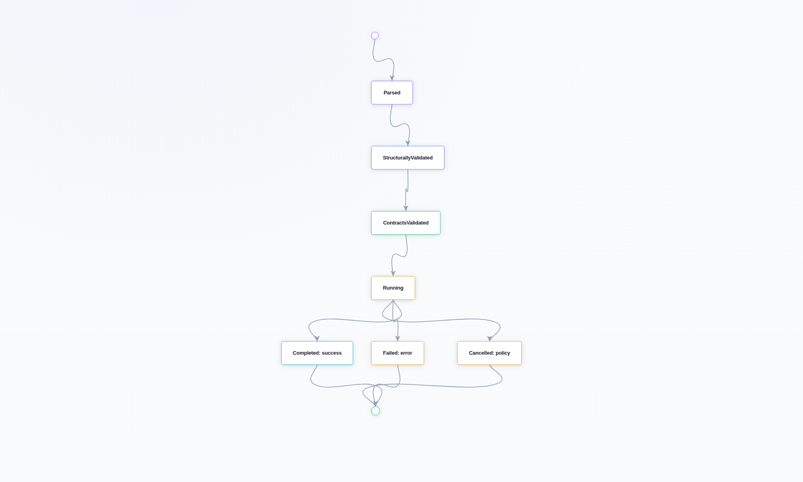
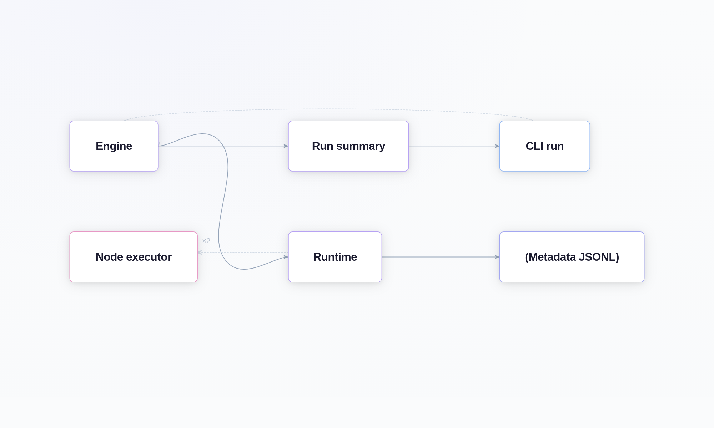

3 Runtime Model
3.1 Intent
Explain how execution proceeds from workflow input through node scheduling, message flow, metadata emission, and terminal summary.
The short version is that Pureflow tries to make execution feel ordinary: validate first, run second, record what happened as it happens, and stop with a clear terminal state. That may sound conservative, but it is what keeps the system understandable when workflows start to get interesting.
The chapter is organized the same way a run happens: first the setup, then the movement of work, then the point where the run becomes a finished artifact you can inspect.
3.2 Execution Lifecycle
Pureflow runtime behavior is coordinated by three layers:
pureflow-clihandles input/output and user-facing options.pureflow-enginevalidates execution preconditions, builds run context, and orchestrates node execution.pureflow-runtimebridges engine scheduling into the underlying async runtime and observer hooks.
That split is not accidental. It keeps the user-facing command path, the policy layer, and the execution substrate from collapsing into one giant abstraction.
At a high level, execution follows this order:
- Parse workflow document (
pureflow-workflow-format). - Build/validate graph shape (
pureflow-workflow). - Validate contracts and capabilities (
pureflow-contract+pureflow-core). - Construct runtime registry for node executors (native and/or WASM).
- Schedule nodes and move packets over bounded ports.
- Emit lifecycle/queue/message/error metadata records.
- Produce terminal
WorkflowRunSummaryfor CLI output.
Read that list as a story about the run rather than a checklist. Each step narrows the question from “is this workflow valid?” to “what happened on this particular execution?”

3.2.1 Runtime Layers at a Glance
This table is the simple map of who does what during a run.
3.3 Runtime Phases and Boundaries
The phases below are the practical way to think about a run from start to finish.
The phase table below is the fast version. The sections that follow unpack each step in plain language.
3.3.1 Phase 1: Definition and Safety Checks
Before any node logic runs, Pureflow enforces static safety:
- identifiers and format version are validated,
- graph connectivity and port references are validated,
- contract/capability alignment is checked,
- schema compatibility across connected ports is checked.
This keeps runtime failures focused on execution concerns rather than document shape mistakes.
It also keeps the guide honest for junior readers: if a workflow fails before runtime starts, that is usually not a “node problem.” It is a contract, topology, or capability problem.
That distinction saves time in debugging, because it points attention to the right layer immediately.
3.3.2 Phase 2: Execution and Message Transport
During execution, nodes communicate through bounded channels associated with workflow edges:
- senders reserve queue capacity,
- packets are enqueued/dequeued at typed ports,
- queue pressure is observable via metadata records,
- backpressure is explicit through bounded capacity behavior.
This gives deterministic pressure points for debugging and policy decisions.
It is a small but important detail. Unbounded queues make it too easy to hide a design problem behind memory growth. Bounded queues force the system to say “slow down” in a way people can actually observe.
That is why the guide keeps coming back to bounded channels. They are one of the main reasons the runtime feels legible.
3.3.3 Phase 3: Terminalization and Summary
When execution reaches a terminal state (completed, failed, or cancelled), Pureflow emits:
- final metadata records (including terminal lifecycle and error records),
WorkflowRunSummarywith status, counts, and metadata path totals.
The summary is the machine-facing endpoint for automation and CI decisions.
That split is deliberate. The metadata stream is for forensics and live inspection. The summary is for the final answer. Most systems blur those two ideas together; Pureflow keeps them separate so each one stays simpler.
The result is that automation can stay fast while humans still have enough history to understand a run afterward.
3.4 Error Handling Model
Pureflow uses stable error taxonomies (CDT-*) and structured error payloads so consumers can branch behavior without string parsing.
The goal is not just nicer errors. The goal is errors that stay meaningful after the system grows.
Error surfaces are intentionally split:
Retry/recovery policy remains a node/runtime concern and is represented through contract/core policy types rather than ad hoc CLI-only logic.
That keeps retry behavior where it belongs: with the runtime and the contract, not buried in a command handler.
3.5 Observability Touchpoints
Observability is first-class in the runtime model and includes:
This part makes runs easier to understand after the fact.
That is part of why the runtime model is pleasant to work with. You are not left inferring state from a pile of ad hoc logs; the engine tells a consistent story about the run.
That consistency matters more than verbosity.

3.6 Operational Notes
- Queue capacities in workflow edges are part of runtime behavior, not only structural metadata.
- Metadata JSONL is designed for tooling and dashboards; it is the canonical event stream for run forensics.
- The run summary is intentionally compact and should be preferred for fast pass/fail automation.
- Cancellation is represented as a shared Pureflow-owned signal, so a node can see the same request that the runtime supervisor sees.
- The runtime wrapper intentionally stays narrow. Most of the interesting behavior belongs to Pureflow itself, not to the async substrate.
Those two notes are the practical summary of this chapter.
3.7 Runtime Takeaways
The runtime model is not trying to be clever. It is trying to make the flow of work, the points of pressure, and the final outcome easy to follow.
That is why the chapter keeps returning to bounded channels, explicit metadata, and a narrow runtime boundary. If those pieces stay clear, the execution model stays teachable.